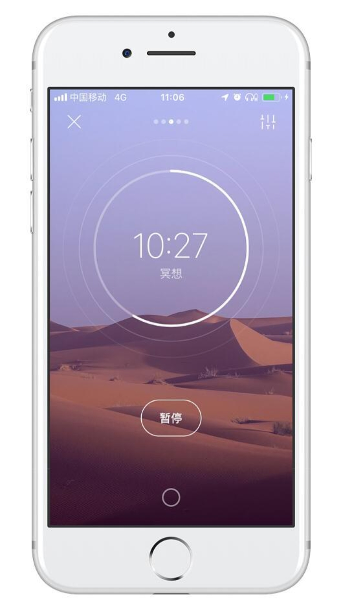

你是否常被失眠困扰，通过传统数羊方式试图进入睡眠，然而未果？
你是否厌倦于身处单一环境，毫无变化，也没有时间亲近自然，听雨听风？
你是否难以静心阅读，或拖延成瘾，无法排解一些情绪，想要找到放松出口？
潮汐服务于步履匆匆上班族、DDL学生党、身处嘈杂环境的创意人、追求平和的冥想者


「潮汐」是一款大自然声音主题的应用，在繁复的生活中，提供自然声音场景。
大多数的番茄工作法应用，都只像计时器，而潮汐用白噪音让你投入专注。
要是你喜欢听歌，白噪音还可以跟音乐融为一体。
设计风格 清新简约，场景为开阔纯净背景，搭配半透明效果，遵循极简的设计美学。
沉浸感受 置身于绵绵细雨、图书馆或咖啡厅、森林或山川，总有个地方你想要到达。
睡眠与小憩 精选高清助眠声音，独创轻唤醒闹钟功能，让你和万物声音一起入眠。
文青宝藏 潮汐日帖记录心情，尽管忙碌庸常，但诗与爱缺一不可，要始终认真生活。
• © 2021 Tide • 了解更多 click here !